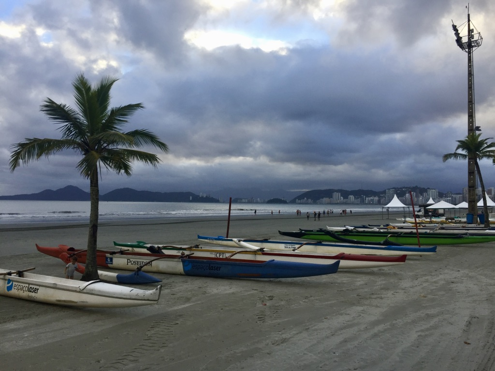

Origem da Canoa Polinésia ou Havaiana
Canoa polinésia é o nome dado à embarcação de origem polinésia que tem um segundo casco que serve de estabilizador, permitindo que mantenha sua velocidade sem comprometer a sua estabilidade. Esta denominação é adotada para definir as canoas tradicionalmente utilizadas na região do triângulo polinésio. Também chamadas de Canoa Havaiana, Wa'a, Va'a, Outrigger, essas embarcações foram muito importantes para o processo de colonização daquela região. A Polinésia é um conjunto de ilhas no Oceano Pacífico, entre a Austrália e os Estados Unidos, do qual fazem parte o arquipélago do Havaí e o Taiti (que por sua vez faz parte da Polinésia Francesa.)
Devido às características propícias, os habitantes de toda aquela região utilizavam as canoas como meio de transporte entre as ilhas. Cada região (ilha ou arquipélago) acabou desenvolvendo suas embarcações de acordo com as características locais. No Havaí, por exemplo, onde o mar é mais agitado, as canoas têm uma curva de fundo envergada, enquanto que no Taiti as embarcações possuem formato mais alongado, com um cockpit fechado para cada um ou dos remadores, dependendo do modelo. Todas têm em comum as três partes fundamentais neste tipo de embarcação: o casco (ou hull), o flutuador (ou ama) e os braços que ligam um ao outro (yakos).